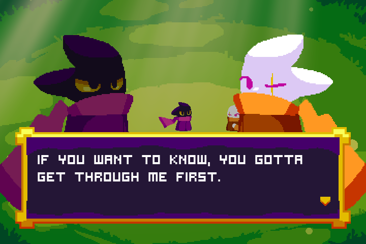
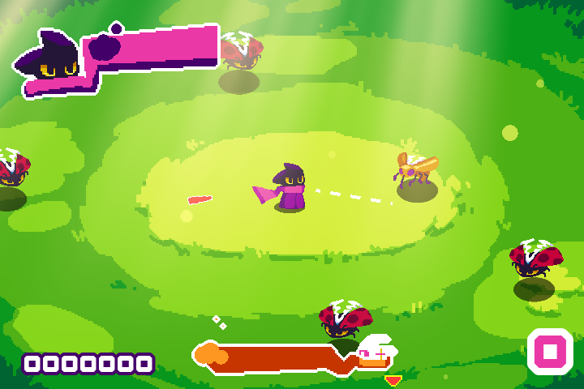
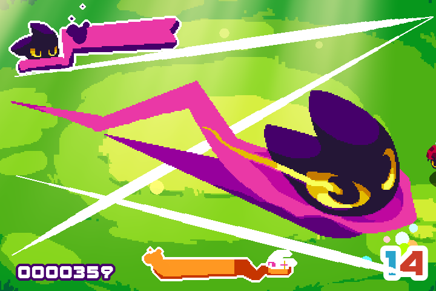
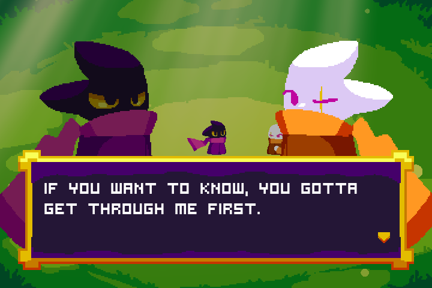
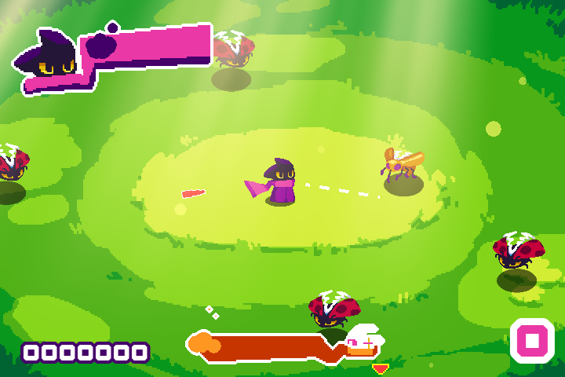
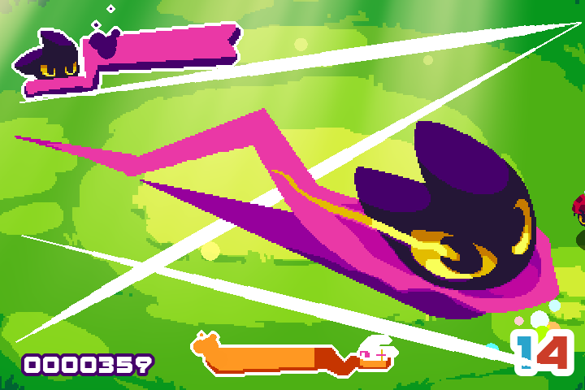

This is a rant for whatever wrong is going on with the world which most people actively dismiss solely to live a brief comfort moment and not yearn (fight off even) for a much better, not dehumanizing society. If you like how things work that violence, slavery, and other degeneracy is allowed in plain sight, and that the next generation should be working under inhumane conditions, perpetually turning the cogs, and doesn't deserve a promising future, please, do yourself a favor and turn into fertilizer 6ft deep underground. Thank you.
Click to show/hide content
Table of Contents
- The Ruling Power of the Insufferable
- Pigsty Consumerism
- Persona Personification
- Death-Deserving
- Inhumane Victims
- Identity Privilege
- The End
┈┈・୨ ✦ ୧・┈┈
The Ruling Power of the Insufferable
Personally, given all the problems we have in this world, I think even in the amidst of the possibility that someday higher extraterrestrail beings will try to conquer us, or kaijus will rise up from the depths of the sea and decimating half of the entire populace, we as human beings will still find opportunities from dire situations to profit from them. Death is profitable. Injuries can cost an arm and leg. And we're just that stupid. Even if some monster shows up and started blasting people, we'll argue whether the monsters' actions are immoral, woke, religious or political. It's insane how sensitive and active we are when it comes to one's ideologies and actions, but never been too responsible to make the right choices for everyone.
Pigsty Consumerism
By this point it is no surprise that one of the most clicked content over the Internet are things that revolve around endless drama, tragedy, and stupid agendas. It's much easier to make a content that is favored by the unholy algorithm and bless everyone with a bite-size slop. Just perfect, for the degrading attention span and critical thinking. Given the commercialized space, most sites are designed in such a way for quick profit and control over the information. There's no need for creativity when you can simply vulture over other's scraps and call it a day. One slop over the other, one hate after another, as simple as that. Don't even get me started with AI brainrot.
Back in the early 2000s the Internet is still in its infancy, even commercial products, were undergoing countless experiments that are risky but provided every consumers a wide variety of creative, innovative, and lively products and content. Unlike the dystopian minimalistic corporate aesthetics being shoved down in our throats now, the designs and themes are just unique and can identify with so many people.
This is prevalent to the flip phones in history:
"The market was flooded with diverse flip phone models offering different features to cater to consumer preferences. These phones featured color displays, built-in cameras, text messaging capabilities, and basic internet browsing. They provided a range of options for consumers with varying needs and budgets. For example, the Nokia 7200 series featured unique designs and interchangeable covers, allowing users to customize their phones to reflect their personal style."
"Style and Fashion Statement: Flip phones became fashionable accessories, reflecting personal style and status. They were available in various designs, colors, and finishes, allowing users to express their individuality through their choice of phone."
"Affordability: Flip phones offered options at different price points, making them more accessible to a wider range of consumers compared to high-end smartphones. They provided a cost-effective way to stay connected and enjoy basic mobile phone functionalities."
- The Evolution of Flip Phones: From Nostalgia to Modern Functionality
Joan Banura (2023, July 18), pctech Magazine
While profit is the goal, they provided innovative creations that founded and shaped the things we enjoy now:
"The 20th century witnessed a surge in innovation and the creation of iconic toys that would shape generations of childhoods. Lego, invented by Ole Kirk Christiansen in Denmark, revolutionized construction toys, promoting creativity and problem-solving skills. In the United States, the advent of plastic manufacturing led to the mass production of toys like Barbie dolls, G.I. Joe action figures, and the iconic Mr. Potato Head."
"The mid-20th century also saw the emergence of electronic toys, with the introduction of battery-powered and electronic components. The Easy-Bake Oven, introduced by Kenner in the 1960s, allowed children to bake miniature treats with a light bulb. The popularity of electronic toys soared in the following decades with the rise of video games, handheld electronic devices, and interactive toys."
- The Birth of Iconic Toys: 20th Century Innovations
The Evolution of Toys: A Comprehensive Journey Through History and Significance, Alakazu (2024)
And back then, you have this endless catalog of very distinct games which offers something new that others don't have:
"Part of their appeal lies in their simplicity. Unlike modern games that can have complex stories and mechanics, retro titles were crafted to be straightforward yet still challenging. Instead of focusing on flashy graphics, they emphasized gameplay that pulled you in for hours."
- Nostalgia tech: Why vintage games are winning over new generation
Yackulic Khristopher (2025, January 22), Android Headlines
"Platformers have always been an easy, up-front genre to get into... Compounded to those simple mechanics, the addition of backtracking, upgrading, power-upping and accessing new areas... adds a lot of spice to how the adventure opens itself up for the player, giving her/him the impression (even if it's a false one) of being inside a very big context that's ready to be explored in a multitude of ways," says Alonso Martin, developer of Heart Forth, Alicia.
- Why the fascination with this genre?
The undying allure of the Metroidvania
Christian Nutt (2015, February 13), Gamasutra
"1986's Metroid and its SNES sequel, in particular, are touchstone titles in what has now unquestionably become its own genre. The first in the series introduced many console gamers to the idea of a large, explorable 2D platforming world; in 1994, Super Metroid refined that gameplay immensely while adding deft storytelling. Three years after that, Symphony of the Night expanded this formula in all directions, adding both complexity and depth at every turn."
"First off, I didn't like the state of action games at the time," says Koji "IGA" Igarashi, when asked where 1997's Symphony of the Night came from. "Titles divided into discrete stages were tending to get more and more difficult, leading to the situation where good players quickly finished them and beginners were no longer getting their money's worth. There was also the fact that the people on our team, including myself, really liked The Legend of Zelda, so we wanted to create a game in that style."
"In retrospect, it's little surprise that this game launched a genre; it was a clear attempt to break away and create a holistically enjoyable game for a wide audience. The result worked too well to remain unique."
- The undying allure of the Metroidvania
Christian Nutt (2015, February 13), Gamasutra
So, compared to what we have now from AAA studios and corpo alike, they have nothing but countless remakes, remasters, and media that would (according to them) cater to 'everyone', which in the end just doesn't work well.
"If you read an interview from game developers in the 90s, they’ll say things like “With this game, we tried to do this”, or “we wanted to achieve the feeling of this”. If you read an interview with developers today, even indies, they’ll say something like “we tried to recapture the feeling of this”. There’s a focus on doing what was once done well."
"It’s not bad to try to recreate the best of the past, but we see it way too often."
"Instead of looking forwards, we’re looking back"
"Games that try to invent new things, or just games that have some real thought put into them, still exist, but they’re too far and few between. But then again, there were a lot of bad games back in the 80s."
- On the Side of Games Being Better in the Past
Were Games Truly Better In The ‘Good Old Days’?
Rettsu Dansu (2016, October 4), GameSkinny
Despite the limitations of the technology in the early years, development teams were able to be creative enough and push the limits of hardware to their untapped potential. Palette swaps were applied to deliver more colors to various levels and sprites; 4 channels (usually) and sometimes an extra for samples were used to make rather complex background musics; raycasting to present 2d graphics in a pseudo 3d render; .kkrieger created by .theprodukkt, is an FPS game that fits in 96kb size; fogs were used in the PS1 Silent Hill to hide distant objects being loaded; some sprites in NES Kirby's Dream Land are cut into 2 to save space and allow reusability; and so much more.
Prior to the current state of AAA games, titles shipped were finished and are in a playable state. Now, large studios focus on creating games that are colossal in size, too buggy in release, filled with 'micro' transactions, mostly are live service, doesn't have any single player or local coop mode, and so much more. It's embarassing given how technologically advance we are now but we got these incompetent releases. The old media storage then weren't as impressive as to what we use now, and so devs have to be creative enough in order to make games fully work, with less to no bugs noticeable in release, whilst working under very limiting conditions, and they made it possible (looking at you, my beloved DOOM, PSP, and GBA games). Nowadays it's just a race to ship a barely working unoptimized game with uninteresting elements.
"Big companies like to play it safe and stick with what works. This keeps ROI high, risk low, and investors happy. What this doesn’t do is inspire or allow for creativity in the workplace. If one were to look at an array of recent AAA games it’s easy to pick out many common threads. For instance, because of the success of titles like Fortnite and Overwatch there have been many similar games released or announced trying to piggyback off of the acclaim and hype of those titles."
"Just recently for instance, in Sony’s June 2024 State of Play both 5v5 and battle royale titles were teased, Concord and Marvel Rivals. Companies know that games like these make money. And of course because companies want to keep making more money, they’ll keep cranking out more of these games, effectively milking the cash cow until it’s sufficiently dried up — leaving players with a flooded market and very little innovation."
- Big Companies Keep Cranking Out More Of The Same
Why The Current AAA Game Development Model Is Unsustainable
Kristi Eckert (2024, July 7), Medium
"Movies, Books, Music, really any medium is apparently better back in its early days."
"And there’s some truth to this, especially in film. We’re in an era of sequels, reboots and remakes that are simply made to make money, and many are pretty bad because of that. That right there is exactly the problem."
- On the Side of Games Being Better in the Past
Were Games Truly Better In The ‘Good Old Days’?
Rettsu Dansu (2016, October 4), GameSkinny
"...if I had to pinpoint the golden era of AAA games, it would likely be between 1995 and 2005. These years truly shaped the modern gaming scene, and it feels as though everything released today exists in the shadow of the games from this period. Just looking at recent AAA titles, it’s clear that many modern releases borrow heavily from the classics. However, instead of innovating and pushing boundaries, they often rely on proven formulas."
"Games should be an exploration of new ideas, new features, new mechanics, and moving the industry forward so that gamers can enjoy new experiences every year. This formulaic approach really destroys all of these concepts of innovation. Ubisoft/EA are literally just finding out new ways to use their 15-year-old formula and monetize it again, instead of building something new."
- The Downfall Of Modern AAA Games
Bozidar Radulovic (2024, October 15), Fantasy Warden
Going to the fast and safe route is beneficial in short-term for shareholders alike, and as such, well known IPs are thrown around only to be tarnished by these people who doesn't even appreciate the art behind these works--they don't know the value and worth that is beyond money. These are the ones who get to bend the rules around the world, and yet the worst comes after the other. Lifeless, a waste of funds, a cycle of boring rulers to ruin our lives. If only their stupid decisions don't influence and cause unwanted snowball effect on the economy and creative endeavors I wouldn't be writing this poorly in the first place and yet here I am. The Lion King remake was horrible, Dustborn is a joke, Ubisoft is an entire circus at this point, Disney is still Disney but worse, and so on. CEOs, executives and alike don't have any idea what an average consumer wants as they don't have personality, they're utterly boring, unimaginative individuals, and they're the investor's little puppies.
"Usually, this is because the bureaucracy and the investors of the company don’t really want to take any risks, huge money is at stake. But by not taking risks, we get very plain and bland games. When I hear that there is a new big Ubisoft or EA title coming out, I just have an extreme amount of skepticism about how good this new game is going to be. I just know they are going to release an unpolished, unfinished, repetitive, and quite simply boring product that will be forgotten in less than a few months. Moreover, not only are these formulas repeated, but they also feel like inferior versions of the original since the original is made with passion and this is just made to effectively produce a product."
- The Downfall Of Modern AAA Games
Bozidar Radulovic (2024, October 15), Fantasy Warden
My take is to remove censorships to a degree, give the creative freedom to those who actually know their field of expertise and work, and learn how to stop executives from taking control over projects that they barely know about. Just let the devs, directors, writers, artists, musicians, designers and alike do their own job in peace, and learn how to wait patiently and to fuck off. Of course even if they're the experts on the job and were given the leeway to create, they should remind themselves that they aren't Activision Blizzard and thus can do better.
"We Can Make So Much Money Through Video Games by Barely Trying that There’s no Point in Trying at All"
"This, right here, is the discovery that large companies like Ubisoft and EA made that creates all of the negative reception today. It’s why indie developers, who have to try much harder to be seen by the population, are our source of good design nowadays."
"Many of the games with large budgets that get heavily promoted, have very similar mechanics between each other. Usually there’s a basic RPG leveling up mechanic, stealth, shooter mechanics and an open world. None of these are particularly bad, but there’s little variety."
- On the Side of Games Being Better in the Past
Were Games Truly Better In The ‘Good Old Days’?
Rettsu Dansu (2016, October 4), GameSkinny
Don't be a coward and start taking risks with all the power in your business, just as what your preceding leaders did in history which revolutionized the gaming and film industry, you utterly bland pieces of husk.
Aside from taking risks, please for the love of this simulation, stop being goblins for once, stop fucking things up, and let the studios who provided you the income in the first place by the way, to thrive and let you make more money you intolerable fucks. If you have only let them do their own thing, which most of them do, you would have countless followers to give you more profit in the next 10 years. You can learn a thing or more from Nintendo (and Rockstar Games of course) if you try hard enough. Sure, they aren't favored in the emulation scene for obvious reasons, but they do know what they're doing when it comes to treating studios and their respective IPs, which in turn gives them the positive light in the gaming community and industry. Still to this day, their old titles are still well-known and beloved that countless sequels have been made and are still successful (albeit given that there's countless bugs in GameFreak's Pokemon at launch).
"Studio disposability in the AAA game space goes hand in hand with rising costs. Sadly, it’s not uncommon for large publishers like Sony and Microsoft to buy up studios only to shut them down when they need to recoup their losses. A recent example is Microsoft’s decision to shut down Tango Games, following the release of it’s hit title Hi-Fi Rush."
"What happened to Tango Games is not an isolated incident, nor is it a new phenomenon in the AAA scene. For instance, journalist Jason Schreier catalogues in his 2021 novel Press Reset, a followup to Blood, Sweat, and Pixels, this cost-cutting profit-first practice and it’s decades-long existence. This AAA pitfall is one that needs to change as it devalues studio talent and puts all the power into the hands corporations."
- Studios Are Being Bought Up Only To Be Shut Down
Why The Current AAA Game Development Model Is Unsustainable
Kristi Eckert (2024, July 7), Medium
"If studios in the AAA space are so readily disposable, sadly, so too are the developers that constitute them. When a massive conglomerate like Sony or Microsoft shuts down one of their subsidiaries what happens to the people employed at those companies? If they are lucky they might get offered a different position. But more often then not, those people are laid off. In the past few years the video game industry has been hit by increasingly mounting layoffs as a result of the rapid pace of studio closures."
"While the current attrition can partially be attributed to the inflated growth the gaming industry saw during the height of the pandemic, it is also a result of the vicious profit-first-people-last cycle that’s spearheaded by industry-leading companies. It’s not okay to not respect the very talent making corporations millions, because eventually that talent will start to look elsewhere."
- Developers Are Making Great Games And Then Losing Their Jobs
Why The Current AAA Game Development Model Is Unsustainable
Kristi Eckert (2024, July 7), Medium
Here's a video that can help with one's Tiktok attention span and the degrading ability to think about what's wrong with the game industry nowadays, and bring awareness to the continuous devaluing of the art form in the modern media: The Toxic Mindset That Is Killing AAA Gaming
Of course all hope is not lost, especially with the promising indie space there are often creative, lively, and fresh games being made and released, thanks to its studios and development teams that are connected well with the community.
"The rise of indie games is an interesting phenomenon, especially considering the state of AAA games in the time period. I personally see myself drawn much more to explore high-quality indie games rather than waiting for a new promised AAA game from Ubisoft or EA on the horizon (no pun intended). This was not always the case. Indie games were low-quality, mediocre copies of big AAA titles that were just subpar, but right now it seems that indie games are leading the charge when it comes to ideas, innovation, risk-taking, and, essentially, fun."
- The Influx of New Indie Games and New Great Ideas
The Downfall Of Modern AAA Games
Bozidar Radulovic (2024, October 15), Fantasy Warden
"These indie games have had a profound impact on the gaming industry and culture at large. They have demonstrated that small teams of developers can create engaging, innovative experiences that rival those of larger studios. Furthermore, the success of these titles has inspired a new generation of indie developers to pursue their passion projects, further enriching the gaming landscape."
- The Impact of Indie Games
The Rise of Indie Games: A Historical Overview of their Popularity
rpgwizardorg (2025, January 17), 2D Computer Game RPG Hub
I'm not only putting the blame to the corpo, but also the corpo shills and the consumers who don't even bother questioning their gods (corpo, derogatory) anymore. Part of my pet peeves are the individuals who do have access to information in regards to how greedy and scummy a huge studio or publisher is given their practices and history, and yet keep on supporting them by flushing their bucks. The same can be said on crypto investors given the countless rugpulls these 2 years. Instead of complaining why games are dead nowadays, stop buying those uninspiring AAA garbage, let go of those titles since they've been Frankenstein-ed since the IP acquisition, and buy actual games from well-known or rising indie devs. Perhaps, just a big IF, if no attention and pocket were given to these clueless executives, they'll turn a new leaf and be a bit kind towards their teams and the players alike.
┈┈・୨ ✦ ୧・┈┈
Persona Personification
This problem of intolerable ruling doesn't only apply in video games, films, and tangible products. It is also prevalent in social media platforms, most of the cyberspace even. For instance, we have the attention-starved grifter which I'll just address as Loner Husk, completely ruin a platform of various communities with infestation of bots, AI, unregulated ads, and other detrimental decisions to their company like changing the URL to X, broken embeds, and absurd API price increases.
"I can no longer embed tweets in my articles – This began after Twitter changed its URLs to point to X.com instead of Twitter.com. I used to be able to past a tweet link in our CMS and have it auto-fill the embedded tweet. Now that’s broken and our team must work to fix it."
"I can no longer post links as tweets alone – In the past few months, half the time on my articles, my “title card” has broken when I post a link. This is the image you click on to take you to an article that also shows the headline. Now it often does not show up at all, forcing me to upload a picture with every link tweet so something is there. But that picture, when clicked on, does not take people to my article."
"I can no longer tweet screenshots or video from video game consoles – Because of Twitter massively raising its prices for API access, Sony, Microsoft and Nintendo have all now done away with the ability to tweet screenshots directly from PlayStation, Microsoft and Switch respectively. Now you have to do a convoluted process like uploading a photo to a separate app and tweeting it from there instead."
- Every Way Twitter Has Gotten Worse Since It Became ‘X’
Paul Tassi (2024, May 29), Forbes
I can't believe just when I already forgot about his existence and even haven't touched my X account for how long now, I'm back to day 0. Anyways, in Trumpet's recent inauguration, he purposefully made the salute of a certain notorious figure in history. This is a huge red flag and he sure knows what he's doing. Taking on the X platform was a mistake, and with him leading it, the misinformation will rise, hate will spread, and more people will unfortunately worship him, Trumpet, and anything in their circle. Surely he's aware of how he's portrayed and ridiculed by people who isn't buying his lies, and so most of his actions are driven out of spite and solely to feed his ego in my opinion--that's what fulfills his purpose and very being.
Recently, speaking of his image, he was accused of boosting (having someone to 'pilot') his account in Path of Exile 2 over his poorly played stream, which experienced players quickly caught on to. Look, I don't play the game and so I have no idea how all of its mechanics and meta work, but what I do no is to never trust his deceptive character given the years he had built his image. Given the aforementioned, this is just one of their days of casually lying about their reputation and so it won't be a surprise that the platform will be used for their advantage to their agendas--take what happened to Asmongold's X account for example, which by the way I don't watch nor a fan of him either.
“I’m a huge fan of Loner Husk — but this is embarrassing and very silly,” Zack Hoyt, who is known as Asmongold to his 3.29 million subscribers on YouTube, said in a video posted Sunday. “It makes him look bad and it’s for absolutely no reason. It’s of no consequence and it achieves no goal.”
"Criticism toward the X CEO — who has for years described himself as an avid gamer — began gaining traction online after he livestreamed himself playing Path of Exile 2 on Jan. 7. Days later, in the Reddit community for the game, some accused Musk of having someone “boost” his account, or play for him. Others suggested he’s playing using a more skilled player’s account."
- Loner Husk riles up a new corner of the internet: Gamers
Kalhan Rosenblatt (2025, January 17), NBCUniversal Media, LLC
He is also notorious for being a sexist.
"Women in tech face considerable obstacles that start during their youngest years in school and persist in careers that they are frequently forced to abandon because of pay disparities and harassment. So when Musk, who holds considerable sway over (mostly) men in the field, makes a sexist tweet that gets over 600,000 likes, or moves company headquarters to a state that has put a bounty on women seeking medical care, it has a collective impact on women employed in tech jobs and a direct impact on the women who work for him."
- Loner Husk Is a Misogynist and It Matters
Chandra Steele (2021, December 13), PC Magazine
"The engineers — four women and four men — claim Musk ordered their firing in 2022 after they circulated a letter calling the billionaire a “distraction and embarrassment” and urging executives to disavow sexually charged comments he had made on social media. The lawsuit was filed in state court in Los Angeles."
"The lawsuit says Musk’s conduct fostered a “pervasively sexist culture” at SpaceX where female engineers were routinely subjected to harassment and sexist comments and their concerns about workplace culture were ignored."
- Loner Husk targeted in lawsuit alleging sex bias, unfair firings at SpaceX
CNBC LLC. (2024, June 12)
With these, the fate of the platform revolves around his ego. He's mentally deficient to handle a social media business, the advertisements that run it, the traffic, and more.
"Losing verification – The blue check for “notable” figures used to actually be a useful feature on the site both for browsing through accounts to pick out specific types of figures, be they celebrities, content creators, politicians, writers or what have you. Now, the blue check is nothing but a revenue stream for X, instantly negating its entire purpose. This extended to important aspects like news outlets or government being de-verified or even impersonated by other blue check accounts, as detailed in a CNN piece about the story at the time: “The end of traditional verification marked the beginning of a radically different information regime on Twitter, one highlighted by almost immediate impersonations of government accounts.” Some of those issues were corrected but larger issues with verification remains."
"Blue checks swarming replies – One thing buying a blue check gets you is elevating your reply to the top of a thread. This used to usually be based on comment quality/likes etc, but now if you have a check, chances are you will rocket up to the top no matter how bad your take is. This has affected my own page, but it has made browsing the replies of any big account effectively worthless as its full of verified bot replies just saying things like “wow!” and “so cool!” You have to scroll for five minutes to see anything even a little worthwhile. And speaking of bots..."
"Invasion of the “nudes in bio” bots – This is easily one the most bizarre, bad things to happen to the site. Elon’s entire justification for so many changes to Twitter, including the paid verification process, has been to curb bots on the site. As recently as April, he said a “system purge of bots & trolls underway.” But while there might be fewer crypto bots in his replies now, there are now porn bots telling users there are “nudes in their bios” under almost every tweet. Those have escalated into posts of actual hardcore pornography in time and for months now, absolutely nothing has stopped this from happening and if anything, it’s only getting worse."
- Every Way Twitter Has Gotten Worse Since It Became ‘X’
Paul Tassi (2024, May 29), Forbes
Basically if you're a creator who's trying to grow your audience and reach, there's no point there anymore. At this point it's much harder to gain genuine engagements. The Dead Internet Theory is theory no more. Now, his only focus is to keep his image up, have his loyal dogs kept on leash, have the bots do the work for him to populate the site and generate traffic in exchange of the leaving advertisers and users, and be Trumpet's #1 best friend.
There's just no end to the growth of spams, harassments, hate speech, and other degeneracy had increased in this space ever since he started owning the place.
"Harassment – I mean, it’s simply been amplified to an almost unsustainable degree. With the site’s trust and safety department dismantled there are few avenues for meaningful recourse against harassers and by unbanning some of the worst people on the site in mass quantities, Elon has all but encouraged this in the name of “free speech.” This change has resulted in many brands and users fleeing the service, as Twitter had lost half or more of its revenue plus 15% of its users, which was data from a year after his takeover. Elon now routinely cites other metrics that are increasing like “user seconds,” but ones with far less relevance."
- Every Way Twitter Has Gotten Worse Since It Became ‘X’
Paul Tassi (2024, May 29), Forbes
"Before Elon Musk bought Twitter, slurs against Black Americans showed up on the social media service an average of 1,282 times a day. After the billionaire became Twitter’s owner, they jumped to 3,876 times a day."
"Slurs against gay men appeared on Twitter 2,506 times a day on average before Mr. Musk took over. Afterward, their use rose to 3,964 times a day."
"And antisemitic posts referring to Jews or Judaism soared more than 61 percent in the two weeks after Mr. Musk acquired the site."
"These findings — from the Center for Countering Digital Hate, the Anti-Defamation League and other groups that study online platforms — provide the most comprehensive picture to date of how conversations on Twitter have changed since Mr. Musk completed his $44 billion deal for the company in late October."
- Hate Speech’s Rise on Twitter Under Elon Musk Is Unprecedented, Researchers Find
Sheera Frenkel, Kate Conger (2022, December 2), The New York Times
"Researchers collected tweets promoting hate from 100 Twitter Blue subscribers. The tweets were reported to the platform using Twitter’s own tools for flagging hateful conduct."
"Four days after reporting the tweets, researchers found that Twitter had failed to act on 99% of the posts and 100% of the accounts remained active. In the one instance that Twitter removed a hateful tweet, the account from which it was tweeted remains active."
"Twitter failed to act on tweets containing racist, homophobic, neo-Nazi, antisemitic or conspiracy content posted in the last month..."
- Twitter fails to act on 99% of Twitter Blue accounts tweeting hate
Center for Countering Digital Hate Inc (2023, June 01)
Both him and Trumpet pose threat to the traffic of information, and holds enough power to manipulate strings around. Take this for example, some toxic influence gets a pass to the platform.
"By analyzing new publicly available figures on tweet impressions, the Center estimates that just ten reinstated accounts renowned for publishing hateful content and dangerous conspiracies will generate up to $19 million a year in advertising revenue for Twitter."
"The analysis shows that the ten accounts have already amassed 2.5 billion tweet impressions since Twitter rolled out publicly visible impression-counts on 15th December 2022, putting them on track to reach 20 billion impressions over the course of a year."
"Estimates of ad revenue from the accounts are based on three elements: predictions for annual tweet impressions based on daily averages, the results of a simulation to find the frequency of ads on Twitter, and industry information on the cost of Twitter ads."
| Name | Total Views | Daily Views (Since Reinstatement) | Estimated Annual Views | Estimated Annual Ad Revenue |
|---|
| Andrew Tate | 1,642,680,664 | 34,950,652 | 12,756,988,135 | $12,300,021 |
| Robert W. Malone | 291,328,720 | 6,198,483 | 2,262,446,443 | $2,181,404 |
| Rogan O’Handley | 195,153,327 | 4,242,464 | 1,548,499,225 | $1,493,031 |
| Peter A. McCullough | 114,360,075 | 2,433,193 | 888,115,476 | $856,302 |
| Emerald Robinson | 94,385,057 | 2,051,849 | 748,924,909 | $722,098 |
| Gateway Pundit | 93,075,236 | 2,023,375 | 738,531,764 | $712,077 |
| Stew Peters | 68,828,475 | 1,496,271 | 546,138,986 | $526,576 |
| Andrew Anglin | 16,493,433 | 350,924 | 128,087,299 | $123,499 |
| Anthime Gionet | 7,661,913 | 163,019 | 59,502,090 | $57,371 |
| Rizza Islam | 840,762 | 140,127 | 51,146,355 | $49,314 |
| TOTAL | 2,524,807,662 | 54,050,358 | 19,728,380,682 | $19,021,692 |
"To predict yearly impressions for the accounts, the Center gathered a dataset of tweets starting on the 15th December 2022 when impressions first became visible on the platform. The dataset counts 9,615 tweets posted by the accounts over the course of 47 days, ending on 30th January 2023."
"The data shows that, on an average day, tweets from the ten accounts received a combined total of 54 million impressions. Projecting this average across 365 days, the accounts can be expected to reach nearly 20 billion impressions over the course of a year."
- Toxic Twitter: How Twitter generates millions in ad
revenue by bringing back banned accounts
Center for Countering Digital Hate Inc (2023, February 09)
"In conducting our research, we recorded 714 posts from Facebook, Instagram, Twitter, YouTube and TikTok containing antisemitic content. The table below shows how many posts were recorded on each platform."
| Platform | Facebook | Instagram | Twitter | YouTube | TikTok | Total |
|---|
| Posts | 129 | 277 | 137 | 52 | 119 | 714 |
|---|
| Impressions | 375,929 | 447,527 | 719,283 | 3,673,305 | 2,156,487 | 7,372,531 |
|---|
"We also estimated the potential impressions received by each post based on the number of followers of the account or group hosting the post or based on the number of views the post received where that figure is provided by the platform. In total, posts in our sample had an aggregate reach of up to 7.3 million impressions."
- Failure to Protect: How tech giants fail to act on user reports of antisemitism
Center for Countering Digital Hate Inc (2021, July 30)
"Musk shared an AI-generated voice clip of Kamala Harris saying “I was selected because I am the ultimate diversity hire […] So, if you criticize anything I say, you’re both sexist and racist.” The post was viewed 133 million times and does not display a warning label."
"The post is a violation of Musk’s own platform’s policy, which clearly states: “You may not share synthetic, manipulated, or out-of-context media that may deceive or confuse people and lead to harm (‘misleading media’).” The policy also adds that the platform may label posts containing such content, although Musk’s post appeared not to carry one."
- Musk misleading election claims viewed 1.2bn times on X – with no fact checks
Center for Countering Digital Hate Inc (2024, August 08)
This is the same with how corrupt our administration officials which is no news at all, surprise surprise. This is just an example on how anyone with power can get away without any consequences from their actions these days (I'm talking about you confidential funds, unfulfilled government projects, countless national debt, extrajudicial killings, and son of a lying dictator).
Speaking of no accountability, influencers are just another form of cancer. Their title alone is sickening. 'Influencer', influencer of what? Especially towards younger audiences who are prone to your incompetent, unimaginative, and irresponsible content? Social media became mostly unusable in terms of reach and providing quality content, and they contributed to the next generations' deceptive and miserable perception of reality. Influencers often spread lies about their life just so that they can feed their narcissism. They reinforce misinformation and illiteracy, absurd standards and expectations (e.g. empowering unnecessary overspending, devaluing relationships, toxic masculinity, dehumanization regardless of sex and race, etc.), and other degeneracy because they cannot handle an honest life, they can't have genuine connections, and they only know to live the day for merely clicks and recognition.
Personally I never liked Mr. Beast nor watched any of his videos, there's just something wrong about his inanimate grin. His content just plagued up the algorithm of YouTube, contributing to the same formula of slop everyone can kill their braincells on.
"In the redacted filing, it alleged MrBeast and Amazon had not paid contestants their minimum wages and overtime and that some even faced sexual harassment."
"The lawsuit reads, “Several contestants [ended] up hospitalized, while others reported suffering physical and mental complications while being subjected to chronic mistreatment, degradation and, for the female contestants, hostile working conditions.”"
"In the lawsuit, they claim that contestants were deprived of food, sleep, and medical care, not providing the necessities of basic hygiene. Additionally, it claims various participants suffered injuries during its filming."
"Much of the lawsuit is redacted, in particular to references to cases of sexual harassment."
“The female contestants particularly and collectively suffered as a result of [MrBeast and Amazon’s’] actions,” wrote the lawsuit. “The Beast Games work environment systematically fostered a culture of misogyny and sexism where Production Staff did nothing.”
- MrBeast sued by contestants from Beast Games
Amazon show over “inhumane conditions”
Jeremy Gan (2024, September 18), Dexerto
Aside from the harsh set, he paired up with both KSI and Logan Paul to form a Lunchables knockoff called 'Lunchly'. Oh, I guess it's a bit mean to call it as a knockoff when it clearly has its own perks, notably the moldy cheese and 'high amounts' of electrolytes. Mind you, they're influencers and aren't dieticians nor professionals in any field of health and medicine, yet still believe that they know what they're doing with the stats behind the box.
"Pansino has previously sparred with MrBeast, having accused him of editing her out of third place in a hide-and-seek challenge. Pansino has since been an outspoken critic of MrBeast, and has questioned the value of his charitable publicity stunts."
"After MrBeast fans accused Pansino of being biased and faking the mold video, she posted raw, uncut footage of her opening the packet of Lunchly. After filming her video, Pansino posted a photo of the mold, writing:"
“Please be careful everyone. This is not safe and not okay. Especially for children!”
- What Is The Lunchly Mold Controversy?
MrBeast’s ‘Lunchly’ Mold Scandal, Explained
Dani Di Placido (2024, October 25), Forbes
"Several videos on TikTok show moldy cheese in Lunchly packages, and Twitch streamer aSpicyCow appeared to find mold during a livestream. In an ironic twist, aSpicyCow was attempting to prove that Pansino was biased, but ended up confirming her findings."
- ‘Lunchly’ Faces Multiple Accusations Of Mold
MrBeast’s ‘Lunchly’ Mold Scandal, Explained
Dani Di Placido (2024, October 25), Forbes
"Doctor Mike, a physician and YouTuber with more than 12 million subscribers, posted a video on Sept. 23 reacting to Lunchly’s claims."
"He said that, to start, Lunchables were already not a healthy option for kids."
“They’re often too high in sodium, saturated fat and added sugars, and don’t use healthy, whole food ingredients,” he said in the video."
- Mouldy cheese? False nutrition claims? Unpacking the Lunchly drama
CBC Kids News (2024, November 8)
Remember that Mr. Beast's target audience comprises of minors, even to the likes of Logan and KSI, and so they pose a danger to the young audience by promoting and marketing unhealthy products. They can take advantage of younger people as they can't give criticisms not only towards the products but to the grifters themselves as well. Their audience aren't as knowledgeable when it comes to legalities and aren't that familiar with Mr. Beast and co.'s history, which is why they can always just get away with these practices.
Overall, I'm frustrated with how irresponsible the people in power are. We let these kind of insufferable idiots to rule us for years with no positive drastic changes whatsoever making it norm for dehumanizing perception, labor, and treatment. I want people to realize that their voice matters, that they are capable of making a positive impact as long as they don't let these creeps get a hold of their critical thinking, decisions, and life--i.e. don't give them the attention and power. One can be that gear to make the machine collapse for something new and better.
I won't expect much to the people changing their votes on the upcoming election given how many corrupt and unqualified officials have been elected in my country. People just care about how famous and rich politicians here are even if they're uneducated to the position they're aiming for. A lot of actors have gotten their way into the administration, as well as people who have no background whatsoever in law. If people speak up for the truth, regardless if they're journalists, election candidates, or civilians, they'll go missing on the spot or end up with bullet shots. I hate people with power and I truly hope they suffer, e.g. getting incurable diseases for they fuck up the healthcare and research so bad so they got a hell taste of it.
Why do even people kept falling under these kind of people? They haven't learned a single lesson from previous presidential terms. They rather have the brief gratification for having their votes bought, rather than yearn for a prosperous stable life in a long term under the leadership of a promising leader. I'm sick of it. Frankly, at this point, I don't buy the excuse that they're in-need of financial support which is why they sold their votes, when people tend lean to their egos regarding their beliefs. This is prominent given the lines of "We won! Cry over it. You lost the election.", "I told you so, I'm right! We won this election.", and so on. No you mentally challenged fuck, you didn't won anything, and this isn't even about winning or losing in the first place. This is about being a responsible adult, not repeating the cycle, and providing a better place to the next generation just so they won't end up like us. You fucking disgust me.
I don't even care if it ended friendships at some point, for me it is understandable especially when they have this toxic mindset on politics. They're treating it as a game, and protecting their egos and images in their circle in exchange for a dehumanizing ruling of parasites. They only think about themselves, not the betterment of the whole. Period.
If you're alright with having a CEO tell you that you should be comfortable of not owning your games, having a president back when they have criminal records, and others that are just questionable, you should get your brain checked for any possible damage.
In today's era, people are willing to go lengths as long as they get the recognition and numbers that grow their social media presence. Not a single care for any repercussions, and much worse, their actions are even encouraged by the same unhinged and chronically online users. The misuse of the social media and internet as a whole led us to this. Even with the advances in our civilization, we're far from being civilized--my own sanity is dwindling and I'm becoming more uncivil with my wishes for the corrupt. It is my fault for being human and having my fuse run out.
Keep on playing the character and you won't even know what's real anymore.
┈┈・୨ ✦ ୧・┈┈
Death-Deserving
Customers treating the staff like garbages, shitty managers, boot-licking advisers, Tiktokers celebrating genocide, executives who fucked up and still blame and layoff the devs who does know their work, and so much more that I honestly find more deserving of death than the victims and alike. There's a lot of good people out there that deserve more peace and stable life and yet these privileged fucks get to trample down on people who are really in need of help. There are even sickening ones who laugh to homesless individuals and make content of their situations. Fuck humanity for easy slop content and quick money.
Inhumane Victims
Back on 2023, multiple Israeli TikToks have gained attention for being infamous on mocking Palestinian victims on genocide. They're so sickening that not only they're willing to made fun of the deaths of innocent people that died or have suffered from losses, injuries, and hunger, but also happy to go such lengths that they'll include their kids to their garbage videos. They don't deserve their life, they don't deserve to have kids, and most importantly, they don't deserve to live. In my opinion, if you insult and view someone's life as insignificant and worthless, you deserve to be treated the same way, as disregarding human empathy is the same as insulting humanity and life itself. You don't deserve to be treated as a human if you make fun of other's suffering, take advantage over their bodily autonomy, make other's life more miserable deliberately, and other forms of degeneracy. You don't deserve anything that is humane.
"Amid the heart-wrenching visuals of Palestinian fathers holding their dead children in their arms, of mothers crying and doctors exhausting themselves, another set of visuals have come forth — that of Israelis on TikTok creating and posting videos overtly mocking the Palestinian suffering and deaths."
"Many videos have emerged of Israeli settlers, trending on TikTok showing the comfort they are living in, appropriating their attire, mocking Palestinian killings and for being deprived of water, food and electricity."
"These videos come on the heels of the destruction in Gaza where the killings in Israeli airstrikes have been increasing by the day. On 26 October, the Ministry of Health in Gaza released its first detailed report on the casualties."
- 'Disgusting': Israeli Tiktokers Called Out For Mocking Palestinian Deaths
Aliza Noor (2023, October 27), The Quint
They have no idea what it feels like to lose a home, to have nothing to return to. I thought when I was a kid that it'll never happen, that these stupid telenovelas are being stale for the same arson-related conflicts. In a moment, our first house was engulfed in flames and my beloved books, drawings, and other things went with it. I almost lost my family. I was like an hour or 2 still processing what just happened, and I no longer recall what my friends asked me on that midnight. Everything was slow and I can only feel the loss and pain at the time. I am very confused what's gonna happen from that point. Everything we had just robbed away in an instant by some cosmic fluke. I fucking hated that fire, why of all things that could happen it did and even chose us?
Fortunately we have a relative nearby, and so we settled temporarily there. The next morning came and we were asked by our friends again on like how we were doing, what happened during that midnight, or what's going to happen on us siblings from that moment onwards. I simply don't know. I'm a kid, and things just happened too fast. I don't know.
If I remember correctly it was around my 5th grade when the fire happened. Regardless, fast forward to this day, I hold much dislike to people who cheats, takes advantage of people, etc., and by now as writing this I realize what partially causes it. Just don't ever make fun of others suffering, and don't even bother turning it into a 'fun content'. If you do, you deserve to suffer and die. There's a difference to a sarcastic dark humor vs straight up mockery filled with contempt. Fuck Nas Daily, fuck Mr. Beast, and fuck Loner Musk.
"Israeli soldiers have committed widespread abuses in Gaza, including potential war crimes, according to photos and videos they posted, shared and celebrated on their social media accounts, a new documentary has revealed."
"According to the feature-length documentary Gaza, published online by Al Jazeera's Investigative Unit on Thursday, Israeli forces routinely shared abuses they committed on platforms including TikTok, Instagram, YouTube and Facebook after invading the enclave."
- Israeli soldiers 'TikToking' potential war crimes in Gaza,
Al Jazeera documentary reveals
Peter Oborne and Khaled Shalaby (2024, October 03), Middle East Eye
"Since Oct 7, 2023, Gaza and the West Bank have been subjected to intensified Israeli military and settler violence, triggered by attacks by Hamas in Israel. In response, international law scholars and practitioners, human rights organisations, and UN experts have emphasised the risk of Israel committing genocide, requested investigations, and have called on the international community to prevent genocide against the Palestinian people."
"In just over 9 weeks, more than 18,205 Palestinians have been killed in Gaza, along with 265 people killed in the West Bank.4 Designated protected spaces such as hospitals and schools have not been spared. More than 49,500 people have been injured, many of whom are at severe risk of long-term disability or death. Repeated exposure to conflict and violence, including witnessing and experiencing housing demolition, combined with Israel's siege of Gaza since 2007, is already known to be associated with high levels of psychological distress among Palestinians. Exposure to violence, ongoing mass displacement (with almost 1·9 million internally displaced), and the destruction or damage of 60% of Gaza's housing, has the potential to exacerbate mental health issues."
- The health dimensions of violence in Palestine: a call to prevent genocide
Alix Faddoula, Geordan Shannonb, Khudejha Asgharc, Yamina Boukarib, James Smithb, Amy Neilsond (2024, January 06), The Lancet
Most people fail to see why this is a problem unless it's too late and the same horrible things happen to them. Why wait for these to come when we have the means to prevent them from ever happening? These inhumane individuals are also the ones that tend to defend themselves as the victims, and so it is just and righteous to inflict the same pain they had towards the others, which is just an excuse for them to commit killings for pleasure and wealth. News outlets aren't so reliable either for labeling these gruesome events as war instead of genocide. Journalists here in the west don't even try when it comes to properly addressing the numbers of victims and deaths in the headlines, labeling the them instead as casualties and injuries. Not upholding to your integrity in journalism just nullifies your authenticity and profession. You might as well just use your talent on the likes of IGN, they'll surely benefit from you.
A lot of individuals just seem to lean more in favor of violence and hatred. For instance, aside from the aforementioned mockery of genocide via Israeli Tiktok slops, we have some imageboards and the defunct Liveleak containing uncensored posts of horrific events that shows a death of a person. Now, personally I don't find any problems having those kind of content circling around the internet, especially if they're uncensored as news outlets can source them for legitimacy and accuracy of the events. However, my problem with these contents is that people make fun of the victims, and being 'edgy' in the process. Also the problematic shocker sites doesn't do anything other than devaluing human's lives by turning them into basically jumpscares, which is just straight out disrespectful. By constantly consuming these gorey content, mocking the poor individuals behind it, they're gradually getting desensitized of humanity and basic empathy.
Internet, social media, imageboards, forums, all of it weren't a mistake, but the misuse of these technology is. Schools particulary the elementary level should always have subjects about computers and proper netiquette, in order to lead the next generation as responsible surfers of the internet, and make them literate enough to manage their own computer, operating systems, antivirus measures, and so on. In short, teaching the proper use of the technology we have will be a good shift to prevent these kind of problems in the social media and cyberspace as a whole. We are at the age that computers play a vital role to the society's growth, i.e. for the circulation of information, communication, and needs, and so we have to let the younger users be prepared and responsible with its usage--so that again, they won't end up like the most of us.
If most people can be good at using a computer and browsing the internet, and is literate to discern the information they digest from the web space, these acts alone can contribute on combatting against the spread of misinformation, hate speech, and more. It will prevent most pseudoscience, beliefs and alike that can endanger people's lives. It can save mental health and even lives themselves. (Of course, remember to make some Vitamin D outside. Get some grass.)
Going back to the cruelty of humans, for the 2nd time, of all candidates that everyone can vote for, Trumpet gets to rule the west again.
"Donald Trump — a convicted felon who was impeached twice, who’s been credibly accused of sexual abuse, and who attempted to overthrow the results of the 2020 election — has once again been elected president of the United States."
"What are his promises, exactly? Some of them are outlined in Project 2025, a far-right transition plan crafted by dozens of his first administration’s alumni, which includes policies that have been called “authoritarian,” “dystopian,” and a “blueprint for destroying our democracy.”
"The plan focuses on obvious conservative priorities ranging from gutting abortion access and LGBTQ+ rights to ending efforts to combat climate change and income inequality."
- What Happens Now That Trump Won? Project 2025, Explained.
Andrea González-Ramírez (2024, November 07), The Cut
People who aren't oppressed with Trumpet's harmful views and actions didn't learned anything, as if they don't have the brain capacity to do so, and thus ended up voting again for the monster. As usual, vote buying is a key factor to this disaster.
"Tech billionaire Elon Musk has been accused of illegally paying for votes after saying he would give away $US1 million ($1.49 million) a day to registered voters in Pennsylvania – a key swing state where he is campaigning on behalf of Donald Trump."
"In a move designed to help the Republican candidate win the White House, Musk made the announcement at a town hall on Saturday, giving away the first jumbo lottery-style cheque to a surprised attendee at the event."
- Musk accused of illegally paying for votes with $US1 million election giveaway
Farrah Tomazin (2024, October 21), The Sydney Morning Herald
"Hugo Lowell: “Elon Musk says on stage at a town hall that America PAC will be awarding $1 million every day until the election to a registered Pennsylvania voter who has signed his petition. Musk awarded the first $1 million this evening to someone at the town hall, bringing the guy onto the stage and handing him a jumbo check, lotto-style. Musk is essentially incentivizing likely Trump voters in PA to register to vote: Petition is to support for 1A and 2A, so basically R voters. But they also have to be registered to vote, so if they weren’t already, they would do it now.”
"Though maybe some of the other things Musk was doing were of murky legality, this one is clearly illegal. See 52 U.S.C. 10307(c): “Whoever knowingly or willfully gives false information as to his name, address or period of residence in the voting district for the purpose of establishing his eligibility to register or vote, or conspires with another individual for the purpose of encouraging his false registration to vote or illegal voting, or pays or offers to pay or accepts payment either for registration to vote or for voting shall be fined not more than $10,000 or imprisoned not more than five years, or both…” (Emphasis added.)"
"See also the DOJ Election Crimes Manual at 44: “The bribe may be anything having monetary value, including cash, liquor, lottery chances, and welfare benefits such as food stamps. Garcia, 719 F.2d at 102. However, offering free rides to the polls or providing employees paid leave while they vote are not prohibited. United States v. Lewin, 467 F.2d 1132, 1136 (7th Cir. 1972). Such things are given to make it easier for people to vote, not to induce them to do so. This distinction is important. For an offer or a payment to violate Section 10307(c), it must have been intended to induce or reward the voter for engaging in one or more acts necessary to cast a ballot. Moreover, payments made for some purpose other than to induce or reward voting activity, such as remuneration for campaign work, do not violate this statute. See United States v. Canales 744 F.2d 413, 423 (5th Cir. 1984) (upholding conviction because jury justified in inferring that payments were for voting, not campaign work). Similarly, Section 10307(c) does not apply to payments made to signature-gatherers for voter registrations such individuals may obtain. However, such payments become actionable under Section 10307(c) if they are shared with the person being registered.” (Emphases added.)"
- Elon Musk Veers Into Clearly Illegal Vote Buying,
Offering $1 Million Per Day Lottery Prize Only to Registered Voters
Rick Hasen (2024, October 19), Election Law Blog
Billionaires and alike shouldn't exist at all. Allowing them so creates classes and its massive gaps in society, breeding discrimination, political polarization, and making life even for the middle class much harder these years. Prices keep skyrocketing, increased wages aren't enough, ghosts are real in terms of vacant roles, HR demands for the non-existent candidate which makes it impossible for fresh graduates to enter after enduring 10 or more rounds of interviews (i.e. they're only open for seniors), college doesn't guarantee/secures a job in specific fields, demand for AI goes up which advances layoffs of humans who need the job, and much more it's dehumanizing that to the rich,we're mere expendable workforce and not humans who need to live at all.
The poor and middle class, and marginalized as a whole will continue to be discarded from proper living as long as the rich have power and influence over journalism, academia, products, laws, and pretty much everything. They need to die--the possibility of being this absurdly powerful should die.
"...billionaires have taken ownership of news outlets and social media sites, censoring whoever they please. Since Elon Musk took over Twitter – renaming it X – the self-ascribed free-speech absolutist has deactivated an account that tracked his private jet use, the accounts of multiple journalists, as well as political activists, while those of previously banned figures like misogynist Andrew Tate have been reinstated."
- What if ... we banned billionaires?
Kathryn Zacharek (2024, May 21), New Internationalist
"Even if individuals are only implicated discreetly, the capitalist class generates profits upwards by denying workers a living wage, engaging in exploitative labor practices (directly or indirectly along the supply chain), ensuring that medicine and health care costs remain high, or lobbying for or even simply benefitting from favorable taxation policies and cushy government subsidies."
"Wealth is also able to accumulate via close proximity to power, with corporate connections leading to elected office, or merely allowing people to use their influential status to set the agenda according to their own interests. This is known as plutocracy, or rule by the rich, and it undermines democracy. It’s no coincidence that Donald Trump’s landmark 2017 tax cuts were driven largely by big business and helped billionaires pay less than the working class for the first time."
- Billionaires Should Not Exist — Here’s Why
Rebekka Ayres (2021, December 29), Teen Vogue
The rich can go with a slap on the wrist by committing tax evasion via existing loopholes, while people who steal bread and medicine just to live another day gets to be shamed by society and spend months or years in behind bars. Remind you, multimillionaires get to steal billions of money from the working class and just get away from it, while the poor gets to suffer even more for committing crimes that just to meet their needs. It doesn't make any sense and I genuinely believe that the rich should be fed to maggots, alive.
┈┈・୨ ✦ ୧・┈┈
Identity Privilege
There's much wrong in this world and most of us still go to X and press about petty issues when there are more important matters. Fuck your Tuesdays drama when people are literally dying every day from hunger, diseases, untreated injuries, human trafficking, and so on. I don't care what gender or identity you are in, I'm fucking agender and I don't go around yelling about it or being sensitive about having my pronouns addressed incorrectly. For fuck sake be a sane individual and address legitimate problems instead of being this hypersensitive obnoxious petty fuck on the internet. And you know what? Fuck your beliefs if you think addressing you correctly matters more than the victims of the corrupt system. I'm saying this as there's no problem with genders (aside from MAPs they can die off a cliff for even considering it, and also zoophiles should die too), in fact thanks to it I get to know more about my identity as I'm unfamiliar with terms and how I'll catergorize myself, and this applies to a lot of us, however, what I find problematic are these crybabies who kept being online whining about how they're being victims when they're the ones in the wrong, and will even dare to escalate things even further.
Don't go around acting assholes on public which then if confronted about your actions you'll play the victim and spread lies about being harassed. People are correcting your behaviors on public as not only they're intolerable and annoying, they disrupt the peace of the everyone whether they're working or just enjoying their morning coffee. Again, regardless of your gender, race, or background, this doesn't give you the pass to be a complete asshole to everyone. You're not special (but in a way, yes) and you should be civil. Period.
Unfortunately with your actions, some individuals get to be lumped to your image. Instead of having a positive light to these communities your only turning it more favorable towards the sexist and racist fucks. Again, just act civilized both in public and even in the internet.
Our identities and traumas shouldn't be treated as means to be above and just anyone else. We're just as humans as everybody else (excecpt for people who enjoy pointless war, rape, and other degenerate acts against humanity) and so we should act just as how we want others to perceive and treat us back. Make communities thrive instead of dividing us further from each other.
Ugh. I should just write a separate blog about this as it's rather deep and complicated to fit in this section.
Oh by the way, if you're a minor and is voluntarily going to NSFW accounts which explicitly states something like 'DNI with minors',and is harassing these creators for posting NSFW content to the point that they can't work and have thoughts on not only deactivvating their accounts but killing themselves completely, please kindly fuck off the internet and do your fucking home work and chores you insufferable fuck. We've all been on your age before, but not to a degree that we'll go on our way just to harass people to death. Do better with your time and spend it wisely while you can. Get off the internet and stop chugging those vile Prime slops.
Again, stop going to spaces that aren't for your ages just to call them out for doing their job which are targetted towards their intended audience, and not you. God. Is it so difficult to do? To understand? Fuck. I know you're doing this not just because of clicks and attention, but mostly because you don't have anything better to do with your life.
┈┈・୨ ✦ ୧・┈┈
The End
I'm ending this with that I have no expectations for humans to do any better. I know some people do, but I have no hopes for the most of humanity. With the ongoing focus on military funds, confidentials funds or whatever the fuck isn't disclosed to the public, I doubt that everything will get better here or anywhere in a larger picture.
Abuses will continue, the ozone layer will become thinner, few species will be extinct, rich will only get richer, X's echo chamber will only grow, news outlets will continue to lie, healthcare costs will stack, and people will still kill each other.
I won't kill myself and will continue to fight under these oppresive system. I'll continue to live my life as I see fit even with these circumstances, just as how I made it this far.
I'll live. I'll see the tomorrow.
I'll live.
I...
 




